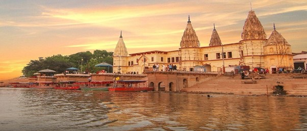

GOA

Located on the western coast of India, Goa is a coastal state renowned for its pristine beaches, vibrant culture, and Portuguese colonial heritage. Blessed with golden sands, azure waters, and swaying palms, Goa's beaches offer endless opportunities for relaxation, water sports, and beachside parties. Beyond its beaches, Goa is dotted with historic churches, forts, and colonial-era architecture, reflecting its rich cultural and architectural legacy. Visitors can explore bustling markets, savor delectable seafood, and immerse themselves in the lively festivities of Goa's renowned music and dance festivals, making it a popular destination for both leisure seekers and partygoers alike.

Places near by:
1.Dudhsagar Falls :

One of India's tallest waterfalls, the Dudhsagar Falls is located inside the Mollem National Park. The majestic falls are a little farther inland approximately 60 km from Panaji on the Goa - Karnataka Border. Literally translating to Sea of Milk , the 310 m high waterfall is divided into four tiers on the Mandovi river and resemble a heavy rush of milk flowing effortlessly down the hill.
2.Baga Beach:

One of the most popular beaches in North Goa, Baga Beach is located close to Calangute beach, around 30 Km North of Panjim. Baga is the perfect destination to witness the dazzling nightlife of Goa as signature places such as Britto's, Tito's and Mambos are located in the vicinity. Being one of the most visited beaches in the North, Baga also offers a vast range of water sports.
3.Anjuna Beach :
Located near Panjim at a distance of 21 km, Anjuna Beach is among the most popular beaches in North Goa, stretching almost 2km. A hippie paradise of sorts it is characterized by its rocky outcrops. From family outings to adrenaline-filled adventures, Anjuna Beach is famed for its golden coastline, nightclubs, beach shacks, watersports, full-moon parties and flea markets.